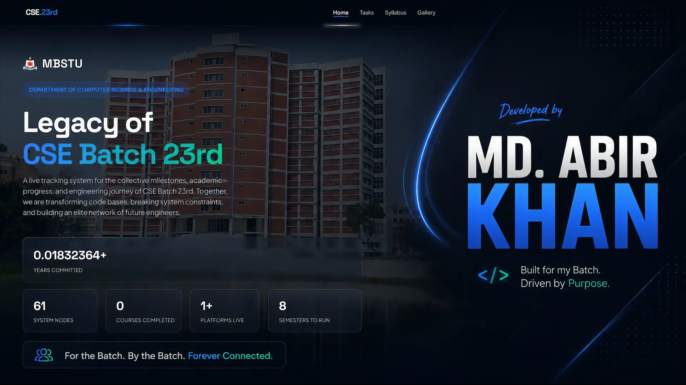

Engineered Systems & Builds
A live registry of deployed systems, lab accomplishments, and custom software builds.

Self Build • Batch Infrastructure |md. abir khan
CSE Batch 23rd Central Operating Hub
Engineered an all-in-one web platform featuring a live academic roadmap, real-time milestone logs, syllabus tracking, and dedicated task management for CSE Batch 23rd.
Built & Deployed
×